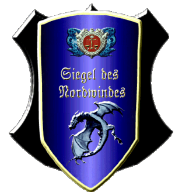

|

|
Das schwarze Brett
|
|
| Übersicht,
Alltägliches und Lokales (RPG) |
|
Die letzte Ehre
|
Galaton Dragus
 |
Frieden mit sich selbst hat er geschlossen, am Sterbebett hoffnungsvoll gen Himmel geschaut als wüßte er was Ihn erwartet.
Vor wenigen Stunden ging ein Freund von mir, ein Bruder im Geiste, ein Waffenbruder wie kein anderer...Herzog Vantiqua
Die Kriegergilden bewunderten Ihn, die Bevölkerung verehrte Ihn, seine Lehen standen ihm treu zu Seite...wie ich es einst und auch noch bis heute getan habe!
Mein Schwert galt Dir bis in den Tod, dieser Schwur endet nun, und zurück läßt du einen einsamen König.
Frater, ave atque vale
König Galaton Dragus,
Vorsteher von Bethana,
Ehemann der reizenden Tonja Dragus,
Teilnehmer an der ersten Scherbenolympiade
Zur 9. Stunde am 46.Saatmond im Jahre 433 |
23.04.08 19:56
 |
|
| Lilokel ok Schnjokel (RIP) |
*bestürzt die Nachricht hört und in Gedenken an den netten Händler, tapferen Kämpfer und geselligen Zeitgenossen eine Kakaoblüte ins Meer wirft*
Baronesse Lilokel ok Schnjokel,
Vorsteherin von Schnjokoladia,
Ehefrau des ehrenwerten Fjokel ok Schnjokel,
Kapitänin der "Wichtelwolke"
Zur 9. Stunde am 46.Saatmond im Jahre 433 |
23.04.08 20:03
|
|
Turiandor Dragus
 |
Ein wahraft guter Freund warst du Vantiqua und wirst es immer sein! Kämpfe haben wir gemeinsam bestritten, endlos viele Abenteuer erlebt! Jetzt ist eine Zeit gekommen die du alleine bestreiten musst!
Aber halte mir nun einen Platz in der Halle der Helden frei, dort, wo die tapferen Männer ewig leben!
*eine Träne verliert sich aus dem Auge des Elfen*
Wir werden uns wiedersehen!
Fürst Turiandor Dragus,
Vorsteher von Quo Veheris,
Schwertmeister und Kriegsminister der Vertex
Zur 10. Stunde am 46.Saatmond im Jahre 433 |
23.04.08 20:12
|
|
| Beliandra Cascus (RIP) |
Mein Beileid gilt der verbliebenen Witwe, denn mit ihm ging ein großer Mann, Krieger und bekannter Händler. Mann hörte immer nur das beste von ihm, und auch wenn ich ihn nicht persönlich kennen lernen durfte, so eilte ihm doch stets sein guter Ruf voraus..
Lady Beliandra of Dark,
Vorsteherin von Akatharsia,
Hohepriesterin im Dienste des einzig wahren Glaubens an Urvan,
Legionärin Urvans,
Verlobte des ehrenwerten Valendor Cascus,
Teilnehmer an der ersten Scherbenolympiade
Zur 10. Stunde am 46.Saatmond im Jahre 433 |
23.04.08 20:14
|
|
Markus Feuernacht
 |
>kommt in dunkeler Kleidung ans Anschlagsbrett und Kniet sich an das das frische grab von seinem Freund Vantiqua. Mit leider und Trauriger stimme spricht er leise dort<
Mein Freund, nie hätte ich gedacht das du so bald von uns gehst. Nie hätte ich gedacht das ich dich so lange überleben würde.
Was ist nur geschehen? Zusammen haben wir lange zeit als Nachbarn und freunde zusammen gelebt und nun kommt die Nachricht deines Todes so überraschend für mich. Was nur hat dich so sehr entsetzt oder mit genommen das du uns alle hier lässt.
Ich war lange in den Fängen der Minotauren, aber was haben sie dir angetan? Nach dem sie dich in deinem Bauernhof und deine Stadt besetzt hatten haben wir uns kaum mehr gesprochen und es scheint als haben sie dir das geraubt was dir wichtig war.
Mein freund du hinterlässt eine große Leere hier auf Loh und eine noch viel größere Leere in den vielen Herzen derer die dich kannten und denen du ein Freund warst.
Mögen die Lichtsieben dir wohl gesonnen sein und dich in deinem Neuen leben aufnehmen und dir dort eine Erfüllung zu teil werden lassen die deinen großen und Ehrenvollen taten auf Scherben gerecht wird.
Hier auf Scherben wirst du immer in den herzen derer Weiter leben die sich immer an dich erinnern mein Freund. Ich bin mehr als glücklich deine Bekanntschaft gemacht zu haben.
>er setzt einige Schritte neben dem Grab eine noch kleine und Junge Eiche in das Erdreich und stellt sich dann vor das Grab<
Möge dieser Baum Wachsen und gedeihen. Möge er all jenen eine Anlaufstelle sein die auch nach deinem Ableben sich deiner Hilfe als Gute Seele und Engel der über sie wacht gewiss sein können.
Tura leite ihn sicher übers Nirgendmeer hin in eine neue Welt in der er seinen Frieden findet und auf seine Frau warten kann.
>dann verlässt er Traurig und mit den Tränen ringend das Grab<
Baron Markus Feuernacht,
Vorsteher von Shambhala,
Verlobter der reizenden Lupina,
Minister für Wirtschaft und Planung
Zur 11. Stunde am 46.Saatmond im Jahre 433 |
23.04.08 20:25
|
|
Sambi
 |
ich lernte dich durch Ausbauen kennen, ich durfte mit dir am tisch was Trinken, und auch in die schlacht.. ich bin froh dich als einen freund gekannt zu haben, du wirst mir in erinnerung bleiben.
und bestimmt irgendwann wird man sich wiedersehn..
Sambi,
Kardinal im Dienste des einzig wahren Glaubens an Pheron,
Ehemann der reizenden Naddel,
Legionär Pherons,
Teilnehmer an der ersten Scherbenolympiade
Zur 11. Stunde am 46.Saatmond im Jahre 433 |
23.04.08 20:25
|
|
| Oki ad Argos (RIP) |
*sichtlich bestürzt über diese Nachricht ist*
Leb wohl alter Haudegen.
Es war mir eine Ehre dich regelmässig nerven zu dürfen.
*gesenkten Haupte davonschreitet*
Pfalzgraf Oki ad Argos,
Vorsteher von Argostia,
Verlobter der reizenden Aimil Liusadh
Zur 12. Stunde am 46.Saatmond im Jahre 433 |
23.04.08 20:37
|
|
Wurzelsepp
 |
*salutiert schweigend am Grab*
Baron Wurzelsepp,
Vorsteher von Tannhausen,
Marschall der Allianz,
Ehemann der reizenden Misha,
Teilnehmer an der ersten Scherbenolympiade
Zur 12. Stunde am 46.Saatmond im Jahre 433 |
23.04.08 20:39
|
|
| Marduc (RIP) |
Da geht er hin, zusammen mit einer Ära der Nachbarschaft im Norden Lohs die seines Gleichen sucht!
Wir beiden Nationsführer waren uns sicher nicht oft einig, schauten genau auf den anderen.
Doch galt es den anderen in der Not die Hand zu reichen, um Hilfe anzubieten, zögerte wir beide keinen Moment.
Mit Dir, Vantiqua, geht eine Legende auf dem Kontinent zu Ende. Niemand hätte es gewagt eine Stadt im norden Loh auf eine derartige Größe zu bringen und diese Jahre hinweg so zu halten.
In der Schlacht gegen die Minotauren kämpften wir Seite an Seite, einten die Völker Lohs zu einer Lanze, dessen Stoß die unaufhaltsame Vernichtung der Bedrohung bedeutet hat.
Nach der Schlacht oder war es nach der Rückkehr aus der Gefangenschaft, hast Du Dich verändert.
Die Züge in Deinem Gesicht wurden hart und im Gespräch war der Geist oft nicht Vorort.
Man sagte mir Du seiest Krank, doch dessen Ende, dieses Ende, wollte ich wohl nicht wahr haben.
Vantiqua, es war mir eine Ehre an Deiner Seite gelebt zu haben!
Markgraf Marduc,
Vorsteher von Ganath Nova,
Superminister für alle Angelegenheiten,
Verlobter der reizenden Gabria von Corin
Zur 14. Stunde am 46.Saatmond im Jahre 433 |
23.04.08 21:09
|
|
| butterblümchen Telrùnya (RIP) |
*mit gesengtem Haupt zum Grab tritt*
Auch wenn ich dich erst sehr spät wirklich kennengelernt habe, bist du als guter Freund von mir gegangen.
Ich werde dich vermissen und wir sehen uns wieder.
*legt eine Rose nieder und lässt die Gedanken schweifen*
Pfalzgräfin butterblümchen Telrùnya,
Vorsteherin von Blumenparadies
Zur 14. Stunde am 46.Saatmond im Jahre 433 |
23.04.08 21:09
|
|
| Agrippa de Arsakes (RIP) |
*Es ja schon wußte, aber nun doch sehr bestürzt ans Brett geht*
Bei Dir Vanti habe ich meine ersten Goldstücke verdient. Du hast mir gezeigt wie man das Geld am besten anlegt *Lächelt bei dem Gedanken* in Deine geliebten Erfrischungstränke, die ich leider zu letzt nicht mehr so häuftig vorbei brachte, aber du wußtet ja warum.
Wieso Du diesen Schritt gewählt hast weiß ich nicht, ich weiß aber das Du nie unüberlegt gehandelt hast, daher wünsche ich Dir, wo immer Du auch nun bist, alles gute, und nur das beste.
Der Witwe mein Beileid, sie wird sein Andenken aufrecht erhalten.
Dafür wünsch ich euch die Kraft.
*Traurig eine Blume niederlegt und sich eine Träne abwischend umdreht und geht*
Markgräfin Agrippa Selachii,
Vorsteherin von Meresin,
Kardinälin im Dienste des einzig wahren Glaubens an Pheron,
Ehefrau des ehrenwerten Sam Selachii
Zur 15. Stunde am 46.Saatmond im Jahre 433 |
23.04.08 21:25
|
|
| Bluemchen (RIP) |
Jedesmal beim Rumble auf Kanubia warst du mir ein unueberwindbarer Kontrahent, stark war dein Arm, beinahe deine Waffen und Ruestungen und trotzdem war dein ton nie ueberheblich sondern immer freundlich.
Moege Griel dich geleiten zu sicheren Ufern
Bluemchen,
Hohepriester im Dienste des einzig wahren Glaubens an Pheron,
Ehemann der reizenden Goldenes,
Träger der mächtigen Axt des Krolltok,
Legionär Pherons,
Der dem Ulfhednir sein Spielzeug kaputtgemacht hat,
Teilnehmer an der ersten Scherbenolympiade
Zur 18. Stunde am 46.Saatmond im Jahre 433 |
23.04.08 22:00
|
|
| Elijah (RIP) |
Sieben Kerzen haben wir in unserem Herzen,
für den, den wir lieben.
Wenn er geht, erlischt die erste Kerze.
Mit jedem Lächeln von uns, die nächsten.
Die allerlertze brennt aber, bis wir zu ihm gehen.
*ein Pfotenabdruck*
Sir Elijah,
Priester im Dienste des einzig wahren Glaubens an Tura,
Mentalist
Zur 18. Stunde am 46.Saatmond im Jahre 433 |
23.04.08 22:00
|
|
Elrohir v. glänzenen Wolfstern
 |
*mit dem Wolf an seiner Seite von seiner Burg aus über das Land blickt und dabei des Verstorbenen gedenkt*
Vantiqua - per aspera ad astra.
Immer hast du die Schwachen beschützt und die Starken das Fürchten gelehrt.
Gerecht und ernst doch auch immer für einen Spaß zu haben.
Ohne dich wird Loh dunkler und die Scherbe ein ärmerer Ort sein.
Mögest du im Tod den Frieden finden, den du hier immer gesucht hast.
Wir sehen uns wieder, mein Freund.
*während eine Träne an seiner Wange herunterrinnt, läßt sein Wolf das alte traurige seit Jahrtausenden gleiche schöne Lied erklingen, das von den anderen Wölfen aufgenommen und vervielfältigt aus den Bergen zurückschalt - der Abschiedsgesang für einen Großen der Scherbe*
Freiherr Elrohir v. glänzenen Wolfstern,
Vorsteher von Wolfshort,
Ehemann der reizenden Olivia v. glänzenen Wolfstern,
Zweiter Hüter des Ordens
Zur 18. Stunde am 46.Saatmond im Jahre 433 |
23.04.08 22:07
|
|
Tengri Lethos von Alirion
 |
Werter Herzog *sich tief verneigt*
ruhet in Frieden, Ihr lasst hier viele Freunde und Bewunderer zurück.
Baron Tengri Lethos,
Vorsteher von Tengrosia
Zur 20. Stunde am 46.Saatmond im Jahre 433 |
23.04.08 22:34
|
|
| Morgoth Turambar (RIP) |
*neigt sein Haupt vor dem dunkeln Grab*
Vantiqua, wie oft haben wir Handel miteinander Handel getrieben?
Irgendwann ging es über den Handel hinaus zur Freundschaft.
Du warst stets ein guter, verlässlicher Partner und Freund.
Die Scherbe wird um einiges ärmer ohne Dich!
Mögest du dort wo du jetzt bin Frieden ruhen.
Markgraf Morgoth Turambar,
Vorsteher von Adel Eryd
Zur 22. Stunde am 46.Saatmond im Jahre 433 |
23.04.08 22:58
|
|
Alberix, Sohn des Duglim
 |
*Der Zwergenkrieger tritt mit ernstem Gesicht an das Grab, legt einen traditionellen Drachenzahn - ein Dolch zwergischer Machart - auf das selbe und spricht grummelnd.*
Vantiqua, meine ersten Enduriumbarren habe ich mir in deiner Stadt erarbeitet. Tavernen und Lagerhäuser ausgebaut. Damals war ich noch ein junger Zwerg, der noch nicht mal 100 Jahre alt war.
Nun ist mein Bart länger. Ich wusste, dass ich Dich vermutlich überleben werde - den Schmerz des Verlustes lindert dieses Wissen nicht - im Gegenteil.
Ruhe in Frieden - den in Ehren lebtest Du!
Sir Alberix, Sohn des Duglim,
Vorsteher von Tadmor,
Berserkerzwerg und Werber der Nation
Zur 2. Stunde am 47.Saatmond im Jahre 433 |
23.04.08 23:51
|
|
Laurana
 |
Vantiqua, ich blickte immer auf zu Dir und Du warst immer ein guter Freund.
Du wirst mir immer abgehen.
Du ruhst in unseren Erinnerungen, ewiglich.
Pfalzgräfin Laurana,
Vorsteherin von Burg Sternental
Zur 2. Stunde am 47.Saatmond im Jahre 433 |
23.04.08 23:55
|
|
| Krassus (RIP) |
seit der Bruderschaft unter Nestor standen wir Seite an Seite, gern errinnere ich mich an unseren Zusammenhalt.
machs gut alter Freund wir sehen uns
Herzog Krassus,
Vorsteher von Lothia,
der, der immer an allem schuld ist ..
Zur 2. Stunde am 47.Saatmond im Jahre 433 |
24.04.08 0:02
|
|
BigHugo
 |
Und wieder ein Freund weniger ...
Baron BigHugo,
Vorsteher von Romantika Meerum,
Ehemann der reizenden Krümel
Zur 3. Stunde am 47.Saatmond im Jahre 433 |
24.04.08 0:07
|
|
| Titania von Distelflamme (RIP) |
Gute Reise..
Herzogin Titania Eilistraee,
Vorsteherin von Küstenbrise,
Moladh an Ealain do Caint,
Ehefrau des ehrenwerten Jadrus von Mondstein
Zur 9. Stunde am 47.Saatmond im Jahre 433 |
24.04.08 1:37
|
|
| Christoph von Eschenbach (RIP) |
Macht es gut, alter Nachbar und Freund, wieder geht einer der alten Recken der Scherbe, doch nie vergessen sein wird er bei seinen Freunden.
Baron Christoph von Eschenbach,
Vorsteher von Castillio Enano,
Ehemann der reizenden Nelladell von Eschenbach
Zur 5. Stunde am 48.Saatmond im Jahre 433 |
24.04.08 6:17
|
|
David von Ressirp
 |
Ein großer Verlust, auch ich habe bei Dir das Laufen gelernt...immer mit Rat und Tat zu Stelle, immer ein offenes Ohr...Dreh- und Angelpunkt hier auf Loh. Du hinterlässt eine große Lücke...
*sich verneigt*
Baron David von Ressirp,
Vorsteher von Imladris
Zur 10. Stunde am 48.Saatmond im Jahre 433 |
24.04.08 7:20
|
|
| Briosch Tholo`dra (RIP) |
Möge Gaia ihm bei seinem weiteren Weg auf ewig begleiten...
bthunder,
Hohepriester im Dienste des einzig wahren Glaubens an Urvan
Zur 11. Stunde am 48.Saatmond im Jahre 433 |
24.04.08 7:42
|
|
Tonja Dragus
 |
Ich habe einen wunderbaren Freund verloren für den in meinem Herzen immer ein Platz frei sein wird.
Vanti, ich werde Dich nie vergessen!
Baronesse Tonja Dragus,
Vorsteherin von Sommergarten,
Ehefrau des ehrenwerten Galaton Dragus
Zur 12. Stunde am 48.Saatmond im Jahre 433 |
24.04.08 7:58
|
|
| Viviane (RIP) |
*legt still eine schwarze rose nieder,verharrt kurz in einem gebet,verlässt dann das grab*
Markgräfin Viviane Anoriel,
Vorsteherin von Schicksaalslande,
Adoptivmutter von Laurelin of Dórthoníôn-Anoriel,
Verlobte des ehrenwerten Nathan von Xanthias
Zur 21. Stunde am 48.Saatmond im Jahre 433 |
24.04.08 10:02
|
|
| Damona Leyniél von Dahén (RIP) |
*betritt zusammen mit Kaeara diAsturien den Turaacker in Sambalia. Nachdem die Gehilfen das Grab ausgehoben haben und den Sarg hinabgelassen haben beginnt sie mit leiser Stimme zu sprechen.*
Einer der Großen ist von uns gegangen.
Einer, der viel Gutes vollbracht hat und über den man noch mehr Positives hört.
Ein großer Krieger, wenn nicht sogar der Größte, Magier, Alchemist und Büchersammler.
Viele schauten zu ihm auf und bewunderten ihn.
Einige waren froh, ihn einen Freund nennen zu dürfen.
Für viele hinterlässt er eine Lücke, die nur schwer zu schliessen ist.
Griel, der ständige Begleiter Turas, geleitet die Seelen der Verstorbenen über das Nirgendmeer in Ihr Reich. Tura wird Vantiqua dort sicher mit offenen Armen empfangen.
So wie sie Jeden empfängt, der die Scherbe auf ewig verlässt.
Doch wird sie auch die Tränen trocknen und den Schmerz lindern, von denen die er zurückliess.
Sie werden Trost finden, in dem Wissen das er in Turas Reich weilt und von dort aus über sie wacht und sie schützt.
*Gemeinsam stehen sie am offenen Grab und lassen seine Freunde ihm die letzte Ehre erweisen. Viele legen einige Blumen oder Gegenstände hinein und sprechen ein paar Worte. Lange Zeit scheint der Strom der Trauernden nicht abzureissen. Als schliesslich Keiner mehr kommt gibt sie den Helfern ein Zeichen, das sie es nun schliessen können.
In der Innenstadt Sambalias wird fortan eine Statue an ihn, den bedeutenden Krieger, guten Freund und liebenden Ehemann erinnern.*
Lady Damona,
Vorsteherin von Jardanar,
Kardinälin im Dienste des einzig wahren Glaubens an Tura
Verkünderin des Glaubens an Tura
Zur 9. Stunde am 49.Saatmond im Jahre 433 |
24.04.08 12:52
|
|
Udra Dronn
 |
Ruhe in Frieden
Baron Udra Dronn,
Vorsteher von Rhiannon,
Schnittchenkönig
Zur 21. Stunde am 49.Saatmond im Jahre 433 |
24.04.08 15:29
|
|
PDonnergott
 |
Auf wiedersehen mein freund !
Baron PDonnergott,
Vorsteher von Butterwiese
Zur 7. Stunde am 53.Saatmond im Jahre 433 |
25.04.08 10:46
|
|
| Aragon der Tapfere (RIP) |
*Geht zum Anschlagsbrett da er erst jetzt die Trauer meint zu überwunden hatte und Mut in sich für diesen schritt aufgebracht hatte*
Vantiqua, Lange war ich ein Treuer Lehe der dir stehts und überall zurseite Stand ich habe dir mein Leben und mein Schwert gegeben bis zum Tode nun ist die Zeit gekommen und ich weiss was dich so Kapput gemacht hat ich bin stolz bis zum ende dein Freund zusein und immer bei dir zusein du warst und Bleibst immer in Mein Herzen bei mir Mein Herr!
Sei die Lichtsieben immer mit dir !
Lebe Wohl
*schreitet dann von das Anschlagsbrett weg*
Sir Aragon der Tapfere
Zur 10. Stunde am 74.Saatmond im Jahre 433 |
30.04.08 9:04
|
|
| TATARS (RIP) |
schöne scheisse... das kann net wahr sein... so nen mist! mein einziger anlaufpunkt um marduc seine leute zu ärgern :(.
ohh heiliger Urvan erwecke unseren Vantiqua wieder zum leben!
Sir TATARS,
2. Sieger des zweiten Schönheitswettbewerbs der Scherbe
Zur 24. Stunde am 76.Saatmond im Jahre 433 |
30.04.08 23:29
|
|
Olivia v. glänzenen Wolfstern
|
auf Scherben wirst du ewiglich in den Herzen und Gedanken derer weilen, die das Glück hatten, dir begegnet zu sein
mögest du in Turas Reich allgegenwärtigen Frieden finden,
ruhe sanft Freund, ich bin gewiss, auch wir sehen uns wieder, zu einer anderen Zeit an einem anderen Ort
Markgräfin Olivia v. glänzenen Wolfstern,
Vorsteherin von Wolfsstern,
Ehefrau des ehrenwerten Elrohir v. glänzenen Wolfstern
Zur 15. Stunde am 78.Saatmond im Jahre 433 |
01.05.08 9:22
|
|
Übersicht,
Alltägliches und Lokales (RPG)
|
|
|
|
Dieser Beitrag
verwendet Regelvariante 2
 |
|
|